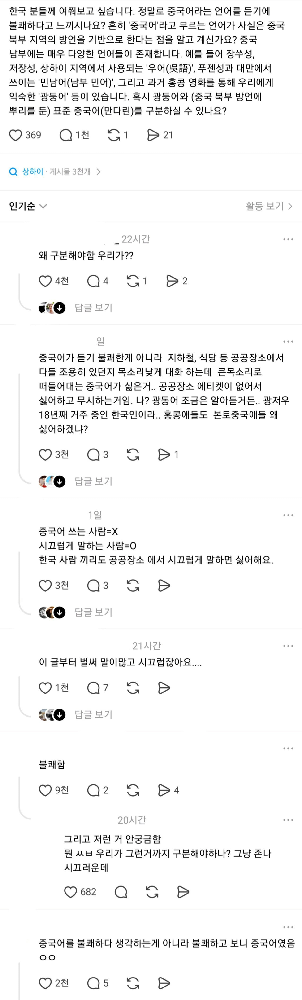
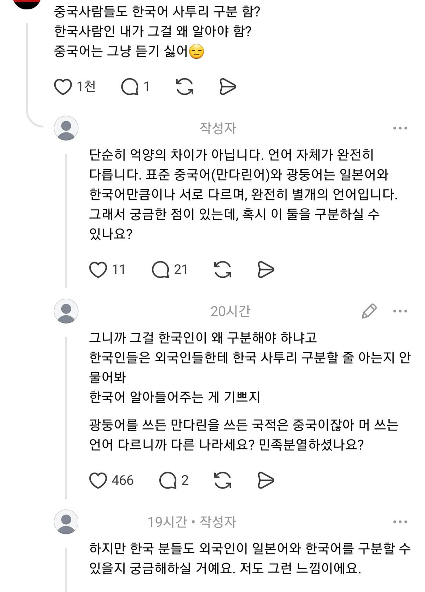

중국어가 시끄러운 언어는 아님. 대만애들은 조용히 말하거든 ㅋㅋㅋㅋㅋ
하도 시끄럽게 말하니 중국어가 조용히 들려도 괜히 듣기 시름
씹덕 더빙 중국어는 생각보다 들을만하더라
짱~깨
아나운서가 조용히말하는거는 들어줄만하던데 참깨들이 빽빽거리는건 볶음밥으로 만들어버리고싶음
신삼국지 사극 드라마는 멋있던데.. 중국어는 좀 낮고 중후하게 해야 멋있는듯
목소리 크게만 안하면 상관없긴 하던데
된소리라 그럼(뉘쌍마이 뿌에마~족빵메아)
우리나라 말 된소리는 욕이 많아... ㅆ, ㅃ,ㅉ ..
광동어든 북경어든 듣기 싫은 건 마찬가지
개좆같이듣기싫음 꺼져그냥씨발련아
사극이나 무협물에 나오는 남자들 톤이나 여자들이 사근사근 말하는건 들을만한데 현실 짱들은 대부분 좆나 시끄러움 그냥
중국어 자체가 원래 그런가 싶을 정도로 시끄럽게 말하는 애들이 많아서 그렇지
신삼국이나 대군사 쓰마이 볼때는 중국어 괜찮았는데
일상생활에서 만나는 사람의 중국어는 듣기 싫음
응 존나 듣기싫어 개좆같애
차분하게 들으면 글케 나쁘지도 않음 근데 그럴일이 없음 ㅋㅋ
유럽가면 배운 따거들 차분하게 중국어랑 영어함 ㅋㅋ
시끄러워서 싫은거지 같은 이유로 틀딱새끼들도 똑같이 후진국 사람을 아니랄까봐 존나 시끄럽게 말하고 폰으로 음악 틀어놓고 다니고 하는데 똑같이 혐오스러움
중국인들이 시끄럽게 굴어서 불쾌한거지
중국인들 의외로 조곤조곤 말할 줄 알고 그런건 딱히 별생각 안듬
근데 일반적인 한국사람이 그런 걸 들을 일이 없지
증국인들 스피커폰으로 지하철에서 존나고래고래 통화하는 거 너무 여럿봤음
개싫음
예전엔 아니었는데
지들이 이미지 씹창내놔서 이젠 듣기만해도 개좆같음
발성이 진짜 좆같아서 그런 것 같음
다 너무 앞에서 소리 내는 느낌이라 더 까랑해
베트남어가 진짜배기임
중국어가 오줌이면 베트남어는 설사똥 ㅇㅇ
베트남어 이런거와 달리 중국어 자체가 그리 듣기 싫은 언어는 아니라고 생각함. 단지 화자가 대체로 경박스럽고 시끄럽기에 불쾌할 뿐이지.
드라마나 영화에 나오는 중국어는 ㄱㅊ 실제 중국어는 시끄러워서 듣기 싫음
불쾌하게 행동을 하면서 말하니 불쾌하게 들리는 것 뿐이지
그런 데이터들이 모여서 너무 큰 선입견을 만들었고 그걸 교정하기에는 저 나라의 현실 자체가 뒤떨어진걸 뭐 어쩌겠음
나도 대학때 중국인 교환학생들 좀 봤고
사촌 형 와이프 분도 중국인임
하지만 난 이 사람들에 대해서는 호감이 있지 악감정은 전혀 없음
왜냐면 중국인하면 갖고 있는 경우가 많았던 잘못된 사고방식이 이 사람들에게는 하나도 없었거든
시끄럽게 말하지도 않고 내 행동이 옆사람에게 피해가 갈 수 있으면 그걸 의식하고 자제하는 사람들이었고
중국이 어디서든 최고라고 생각하며 주변에 폐 좀 끼쳐도 상관없다고 생각하거나
중국의 가치관은 다른 곳에서도 통한다는 비현실적인 역사관이나 국가관도 없었음
그냥 말을 하지 않고 있으면 중국인인지 파악하는데 시간이 좀 걸릴법한 평범한 사람들이었음
하지만 관광지나 인터넷 같은 주변에 없는 다른 곳에서의 중국인들이 워낙에 온갖 곳에 똥을 뿌려대는 한심한 족속들이라 중국인이라고 하면 눈살이 찌푸려지는거지
일단 성조 심한 언어들은 기본적으로 좀 듣기 유쾌하진 않은거 같음. 이부분 원탑은 베트남어라고 생각함.. 그거에 비하면 중국어는 좀더 나은 수준이지만 내 귀에 듣기 좋은 언어는 아님
기본적으로 성조도 있지만 화자의 교양과 화법에 따라 정말 느낌이 다름. 박식하고 교양있는 중국 지성인들과 대화해보면 굉장히 미려하다는 느낌을 받음. 문제는 대대다수 중국인들 화법이.....
중국어 태국어가 ㅈㄴ 싫음
듣기좋게 말하는 중국인도 있던데??
그 중국인 목소리가 좋은 것인지 모르겠다만
한국에서 중국어 잘 하는 사람도 듣기 좋게 잘 말 함.
이상해 진짜. 왜 듣기 좋게 말 할 수 있는데 대부분은 듣기 싫은지.
시끄러운 중국어 -> 짱
조용한 중국어 -> 대만
대만 발음이랑 중국 발음 구분 가능
포인트를 아는군ㅋㅋㅋㅋㄹㅇ